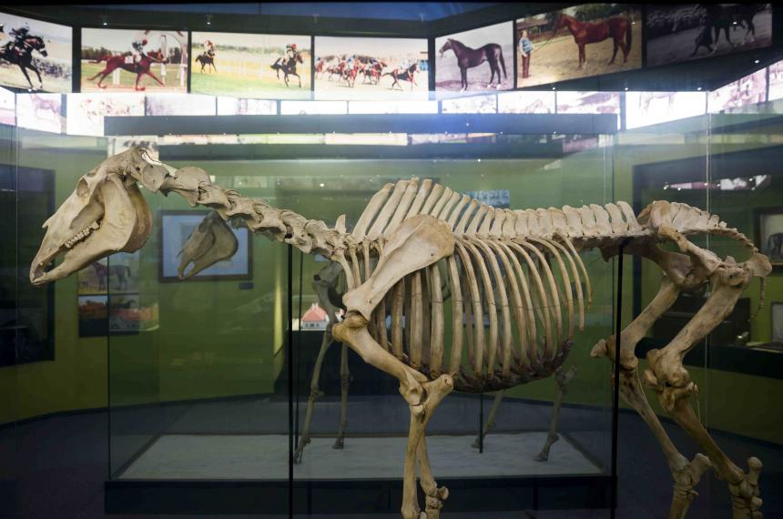

1960. február 14-én született a kisbéri ménesben. Tenyésztője Rádoki József, a ménes újjászervezője. Az angol telivér mén apja a kiváló versenyló Imi, anyja az olasz importból vásárolt kanca, Hurry. Az aranyszőrű pej csődört már fiatalon félreismerték. A szakértők rossz véleményeket írtak róla, mivel nem volt "tipikus" telivér. A nagy termetű csókaszemű mén első ránézésre nem ígért sokat: homlokától a szájáig széles hókával díszített sárga szőre, élénksége és kesely lábai nem jellemzők a jó telivérekre. A hippológusok szerint az ilyen jegyekkel rendelkező lovak "puhák", sérülékenyek, nem szeretnek küzdeni, versenyző képességük sem jó.
Imperiál egy fiatal trénerhez, Aperianov Zakariáshoz került, az ő keze alatt futotta be fantasztikus pályafutását. Már az első versenyeken rácáfolt a kinézetét illető babonára. Három versenyévadban - 1962-1964 között - nem akadt ellenfele a versenypályán, Magyarországon veretlen maradt. 26-szor startolt, 21-szer nyert.

Megnyerte az Osztrák Derbyt, a Magyar Derbyt, a Szocialista Országok Nagydíját, kétszer az Ausztriai Díjat. Legnagyobb sikere egy 2. helyezés a Baden-Badeni Nagydíjon. Már a 2 évesen megnyert Ausztriai Díjbeli 6 hosszas győzelmére felfigyeltek a szakértők. Abban az évben futott Prágában, sőt Magyarországon is győzött.
Ivadékai 12 Magyar Derbyt nyertek, Prince Ippi nevű fia egy Prinzess Addi nevű német kancától Európa-díjat nyert Kölnben és Gran Premio d'Italiát Milánóban. Másik csikója, Immer pedig 4 alkalommal lett a legeredményesebb apamén Ausztriában. 1968-ban Imperiál csikója, Isztorpirin Magyar Derbygyőztes volt. A 2. és 3. helyen is Imperiál-csikó, Rusztan és Inda ért célba. Imperiál toronymagasan nyerte az az évi apamén-statisztikát.
A legendás Imperiált 1989-ben Kerteskőn 29 éves korában altatták el.